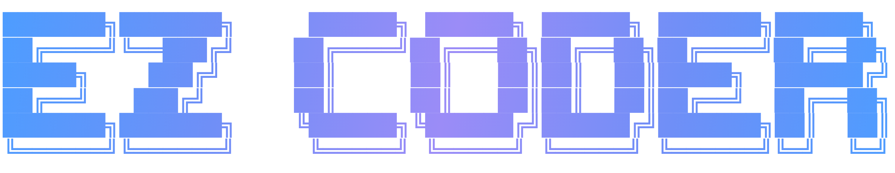
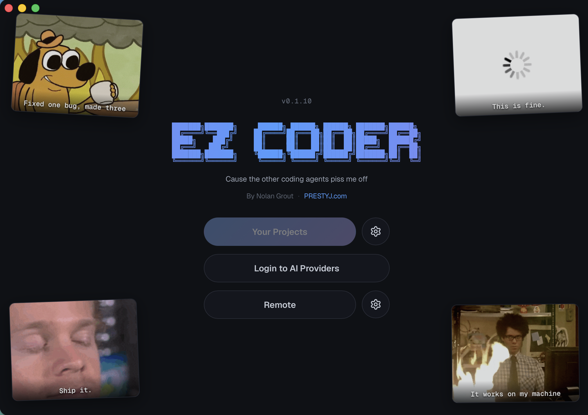

Sign in, don't paste keys
OAuth straight into your Claude or ChatGPT subscription. Prefer a key? Drop one in for Gemini, Grok, OpenRouter or Groq. Credentials stay on your machine.

A desktop coding agent you actually own. Sign in with your Claude, ChatGPT or Gemini account — no API keys to wrangle. Open every project in its own window, let it plan before it touches your code, and watch every move it makes.
Free · open source · auto-updates

The same agent that powers the CLI, wrapped in a desktop app your friends can install in one click.
OAuth straight into your Claude or ChatGPT subscription. Prefer a key? Drop one in for Gemini, Grok, OpenRouter or Groq. Credentials stay on your machine.
It finds your work automatically — EZ Coder, Claude Code and Codex sessions all show up in the picker, newest first, ready to resume.
Each window runs its own agent on its own project — fully isolated. Tile two or four up and let them grind in parallel while you watch.
Tell it to think first. It researches read-only, hands you a plan to approve, tweak or reject — then implements exactly what you signed off on.
See every read, edit and command as it happens. Queue up a task list and let it run them end-to-end, each in a fresh session.
Hit Remote and steer the agent over Telegram. Kick off a job from the couch, get the result when it's done.
Tap any shot to blow it up. This is the real app — captured straight from the build.
Pick your platform — the app keeps itself up to date after that.
On Linux or want to build it yourself? It's open source — read the build docs.
Not for the big ones. You can sign in with your existing Claude or ChatGPT
subscription via OAuth. Gemini, Grok, OpenRouter and Groq take an API key if you want
them. Everything is stored locally under ~/.ezcoder/.
The app is free and open source. You pay your AI provider for usage the same way you already do — EZ Coder just talks to them on your behalf.
Nowhere it doesn't already go. The agent runs locally on your machine and talks directly to the model provider you signed into. There's no EZ Coder server in the middle.
macOS on Apple Silicon and 64-bit Windows. Intel Macs and Linux aren't pre-built yet, but the source builds on all three — see the build docs.
It might. If Windows SmartScreen flags the installer, choose More info → Run anyway; if macOS blocks it, right-click the app and pick Open. It's open source — the code's right there on GitHub.
Automatically. The app checks for new releases and offers a one-click update that downloads, installs and relaunches — no reinstalling.